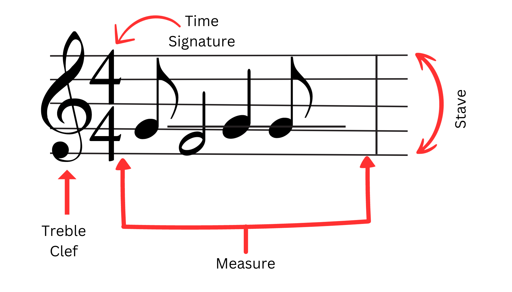

What You Should Know - Skoog: Remix a Song
 Important Vocabulary
Important Vocabulary
- Numerator - the top number in a fraction and it represents the number of parts out of the whole number (denominator). In the fraction ½ , 1 is the numerator
- Denominator - a bottom number in the fraction and it represents the total number of parts that make up the whole. In the fraction ½, 2 is the denominator
- Fraction - part(s) of a whole
- Mixed Number - a whole number and a fraction written together
- Improper Fraction - a fraction in which the numerator is greater than the denominator such as.
- Decimal Notation - a way to write a number that is between two whole numbers - a string of digits that are separated using a decimal point
- Place Value - the value of a digit based on its place in the number
- Clef - the symbol used to indicate which notes are represented by the lines and spaces on a stave
- Stave - a set of five horizontal lines and spaces that notes are written on
- Rhythm - the pattern of long and short sounds in a song
- Pitch - how high or low a note sounds
Musical Notes
Notes are the building blocks of how we write music. They let you know how many beats you have and in what pitch. There are four basic types of notes: whole notes, half notes, quarter notes, and eighth notes. It can be a little confusing at first because after whole notes, notes are named with fractions...but don’t equal fraction beats. This is because they are named in reference to the whole note and the whole note has 4 beats. Therefore, each note is that fraction of the whole note. Think about a half note. It is half of a whole note which has 4 beats. What is half of 4 beats? 2 beats!
| Whole Note 𝅝 4 beats |
Half Note 𝅗𝅥 2 beats |
Quarter Note 1 beat |
Eighth Note beat |
Sixteenth Note beat |
The table above represents the most basic notes. There are more complicated notes that can give you different numbers of beats such as 3 beats or 1 and a half beats, but don’t worry about those right now.
Music Notation
When you write music you do it using a special writing system called music notation. Music notation is a universally accepted way to write music so that others can read, understand, and play it. When using music notation, you write your music using notes on 5 horizontal lines called a stave. Each line on the stave and the spaces in between represents a specific pitch. Pitch is how high or low a note sounds when you hear it. You place your note on the line or space that represents the pitch of your note. Music is separated into measures, similar to how writing is separated into paragraphs. At the front of the stave you will also find a clef. The clef lets the reader know the specific pitch of the notes contained in the music. There are 4 basic clefs: treble, alto, tenor, and bass. Music notation also includes the time signature which you will learn more about below.

Skoog Notation
When you play music with Skoog you use a similar notation called Skoog Notation. Skoog Notation is used specifically for the Skoog device so that users can play songs. It uses colored squares and rectangles to show the duration (beats) of notes. With Skoog Notation, the longer the colored rectangle, the longer the note (more beats it has) and vice versa.

Skoog Notation lets you know what pitch the notes are in by using a key located in the top left. It separates the music by lines rather than measures. For more information on Skoog Notation visit the Skoog Notation webpage
Time Signature
Time signature is found at the beginning of a piece of music and tells you how to organize the rhythm of the music. You can think of a time signature as a fraction, because it is very similar. It has 2 numbers: 1 on top, the numerator, and 1 on the bottom, the denominator. For this activity, we are only going to focus on the numerator. The number on the top lets you know how many beats each measure of music is going to get. The bottom number tells you the type of note that gets the beat. So, if you have a 4/4 time signature, the top number tells us that there are 4 beats per measure. If your time signature is ¾ then you have 3 beats per measure. Each time you write a measure of music, the beats of the notes will add up to the numerator in your time signature. Look at the following measure of music:

The time signature is which means you have 4 beats per measure. If you add up the beats of your notes, you get ½ + 2 + 1 + ½ = 4. The same as your time signature! It’s as easy as adding fractions. Do you notice that music and math have a lot in common?
Remix
A remix is when a musical producer takes an original song or piece of music and changes it in some way with the permission of the original artist. Producers remix songs many different ways from changing the tempo or beat, adding effects, or even having a musical artist change the lyrics and do the vocals. In your challenge, you are going to be remixing the song by changing the time signature. This will change the pattern of the rhythm.
Multiplying Fractions
Multiplying fractions is very similar to multiplying whole numbers. It does not matter if the numerator and the denominator are the same, you just multiply straight across. You will multiply the two numerators and then the two denominators and don’t forget to simplify your answer.

Sometimes, you may have to multiply fractions by a mixed number. To do this you first have to change your mixed number into an improper fraction. Recall that your denominator tells you how many parts you need to make a whole. The whole number in your mixed number tells you how many wholes you already have and the numerator tells you how many parts of the whole you have.

To convert a mixed number to an improper fraction you need to know the number of parts you have in total. To help you do this, follow these steps:
- Multiply your whole number by your denominator.
- Add that number to your numerator.
- Write your improper fraction using the same denominator.

After you have your improper fraction, you can multiply the fractions the same way that you learned above. Don’t forget to simplify your answer!

Converting Decimals to Fractions
A decimal number is similar to a fraction in that decimals are not whole numbers, but parts of a whole. In decimal notation, you have a number that contains a dot, the decimal, such as 1.5. The numbers before the decimal are whole numbers. The numbers after the decimal represents parts or fraction portions. In whole numbers, you have place value which lets you know the value of digits based on where they are in the number. For example, in the number 613 you know that the 6 is in the hundreds place so you have 6 hundreds or 600, the 1 is in the tens place so you have one ten or 10 and the 3 is in the ones place so you have 3 ones or 3. If you add these numbers together: 600 + 10 + 3 you get 613. In decimals, you value. Just like in regular numbers the place value decreases in values of 10 as you go to the right. So the further you are after the decimal, the smaller the place value. The first place value after the decimal is , the second is , the third is , and so on. So if you had the number 613.54 you would have the same place values as you did above before the decimal. After the decimal you would have 5 one-tenths or s and you would have 4 one-hundredths or . This would give you . Notice that the place values in decimals are the same as fractions because they represent parts of a whole. Therefore, you can easily change between decimals and fractions by just multiplying the digit by its place value to find out the fraction. For example, if you had 0.07 you would have . Changing a decimal to a fraction can make it much easier to do math such as adding, subtracting, multiplying or dividing.

Career Connection and Real-World Application
DJ
DJs play live music for people at dance clubs, festivals, and other events and parties. They use turn tables, vinyl records, CDs, and audio files. They work to use music to evoke feelings in their audience, usually excitement or happiness to keep them feeling energized. DJs might create remixes of songs by mashing them with other songs, speeding them up, looping them, or creating other effects. They work with remixing software and other applications to help them create the most entertaining and engaging music.

Music Producer
Music production is the entire process of creating, changing, and saving music. Music producers work with musicians and other artists to oversee the entire production of music including the technical and creative aspects. They have many jobs and roles when it comes to creating the music and must be very good at a variety of things. The most important parts of a music producers job is ensuring that the production stays within the time and money budget, editing the recordings to sound how the artists imagine them, and ensuring that the performers are doing their best.

Composer
A composer is a person that writes original music. They do this by studying existing music, rearrnaging music that already exists, and writing lyrics. Composers must have a vast knowlege of musical notation, as well as musical instruments and how they combine together to form sound. Composers write music for a variety of sitautions and enviornments ranging from video games to Broadway plays. They tend to use music to express themselves in ways so that others can understand and relate. Modern composers use technology and computers to aid them as they write.

Math Teacher
A math teacher instructs students in math at all levels of education. This person teaches new mathematical ideas to students and test them on their mathematical knowledge. They are fundamental in helping students develop their foundational math skills for the future and teaching how they can apply their math skills to real life situations. There are general math teachers that focus on developing a student’s overall foundational math skills or they may have a particular area of math they focus on such as statistics, algebra, calculus, etc.